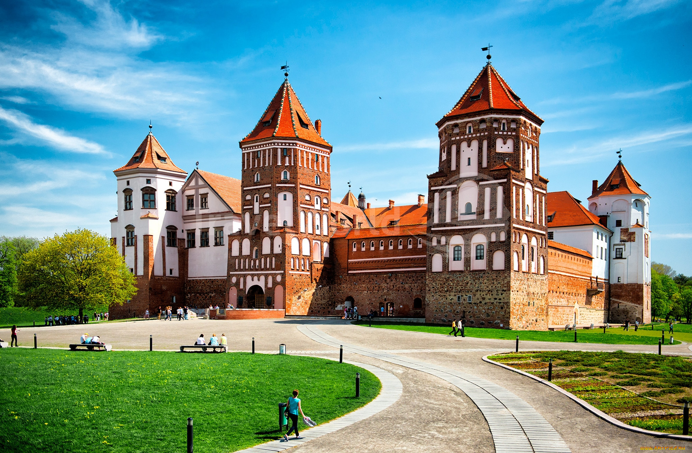
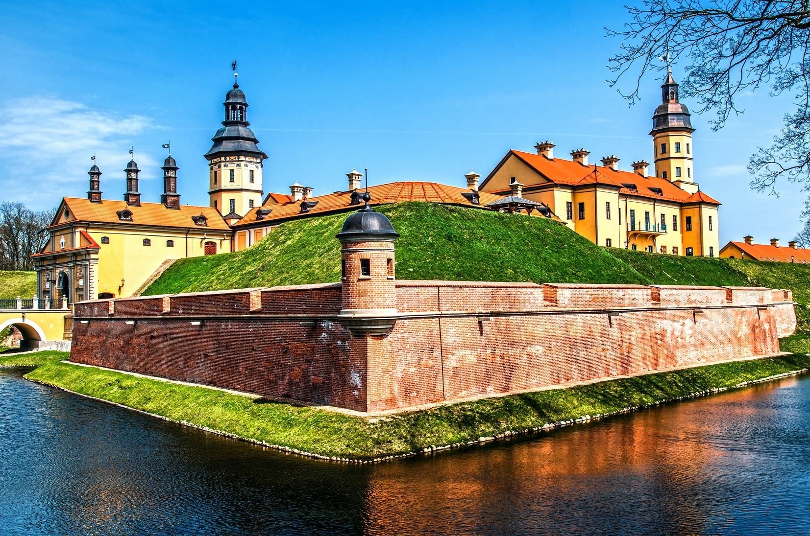
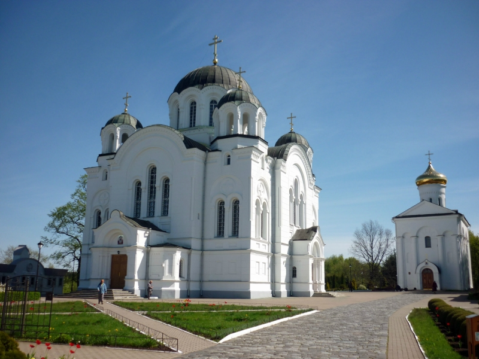

|  |
Мирский замок – один из самых эффектных и популярных туристических объектов в Беларуси. Бывшая цитадель и резиденция литовских аристократов неизменно впечатляет путешественников своим гармоничным и целостным обликом, несмотря на то, что в ее архитектуре переплелись элементы зодчества поздней готики, эпохи Ренессанса, барокко. |
|  |
Несвижский замок – один из известнейших памятников эпохи Средневековья и Нового времени. Он находится в старинном городке Несвиж в сотне километров на юго-запад от Минска. Отправляясь в Беларусь, обязательно посетите и осмотрите этот шедевр архитектуры и садово-паркового искусства, Вы получите истинное удовольствие и восхищение от культурного и исторического шедевра. |
|  |
Древний Полоцк считается одним из древнейших городов Беларуси. Он расположен в живописном месте Витебской области, где река Полота впадает в Западную Двину. Полоцк часто называют музеем под открытым небом, ведь на небольшой площади в 41 км² сконцентрировано много старинных зданий. Это и знаменитый Софийский собор, и Лютеранская кирха, и домик Петра. |